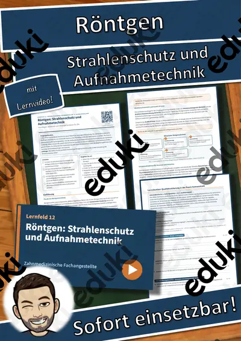
LF 12 Zahnmedizinische Fachangestellte: Röntgen: Strahlenschutz und Aufnahmetechnik – Übungen, Lösungen + Lernvideo
LF 3 Zahnmedizinische Fachangestellte: Infektionsschutz und Abfallmanagement in der Zahnarztpraxis – Übungen, Lösungen +
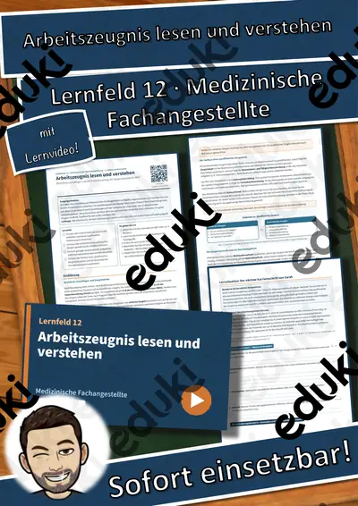
LF 12 Medizinische Fachangestellte: Arbeitszeugnis lesen und verstehen – Übungen, Lösungen + Lernvideo
LF 7 Zahnmedizinische Fachangestellte: Notfallmanagement in der Zahnarztpraxis – Übungen, Lösungen + Lernvideo
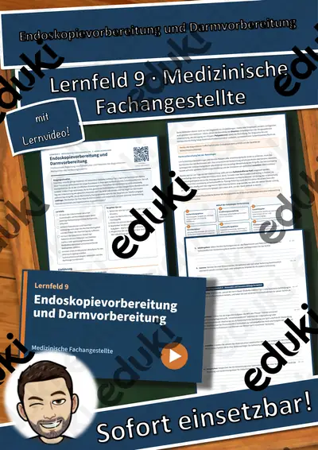
LF 9 Medizinische Fachangestellte: Endoskopievorbereitung und Darmvorbereitung – Übungen, Lösungen + Lernvideo
LF 11 Zahnmedizinische Fachangestellte: Heil- und Kostenplan sowie Festzuschüsse – Übungen, Lösungen + Lernvideo
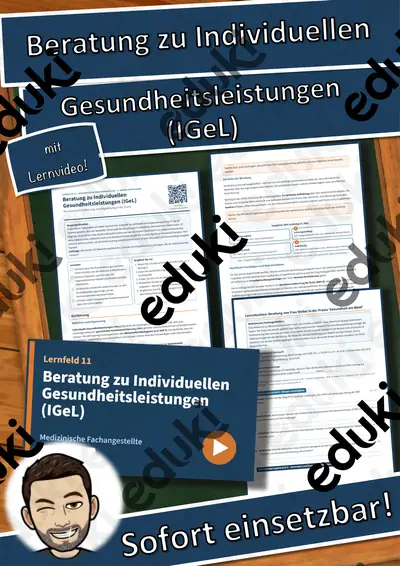
LF 11 Medizinische Fachangestellte: Beratung zu Individuellen Gesundheitsleistungen (IGeL) – Übungen, Lösungen + Lernvid
LF 1 Medizinische Fachangestellte: Jugendarbeitsschutz und Mutterschutz in der Arztpraxis – Übungen, Lösungen + Lernvide
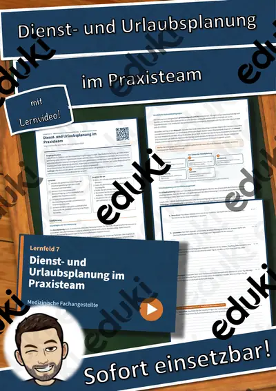
LF 7 Medizinische Fachangestellte: Dienst- und Urlaubsplanung im Praxisteam – Übungen, Lösungen + Lernvideo
LF 11 Medizinische Fachangestellte: Früherkennungsuntersuchungen und Recall-System – Übungen, Lösungen + Lernvideo
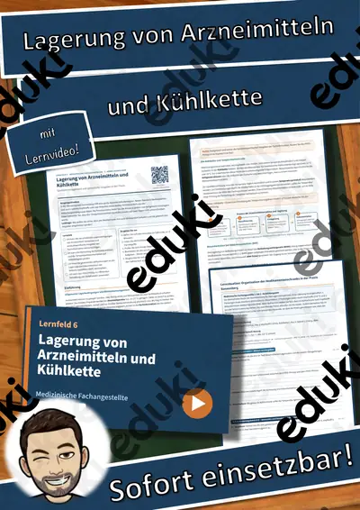
LF 6 Medizinische Fachangestellte: Lagerung von Arzneimitteln und Kühlkette – Übungen, Lösungen + Lernvideo
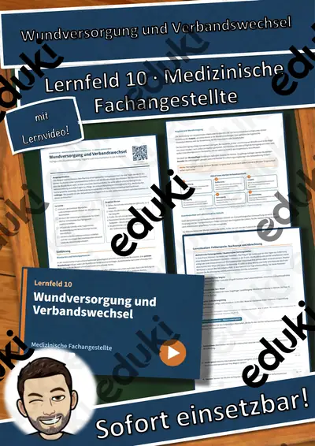
LF 10 Medizinische Fachangestellte: Wundversorgung und Verbandswechsel – Übungen, Lösungen + Lernvideo
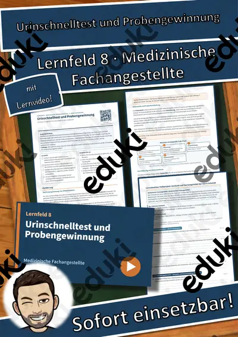
LF 8 Medizinische Fachangestellte: Urinschnelltest und Probengewinnung – Übungen, Lösungen + Lernvideo
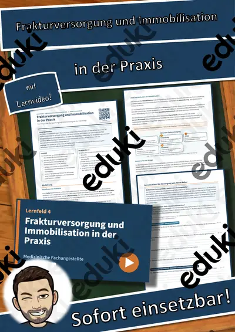
LF 4 Medizinische Fachangestellte: Frakturversorgung und Immobilisation in der Praxis – Übungen, Lösungen + Lernvideo
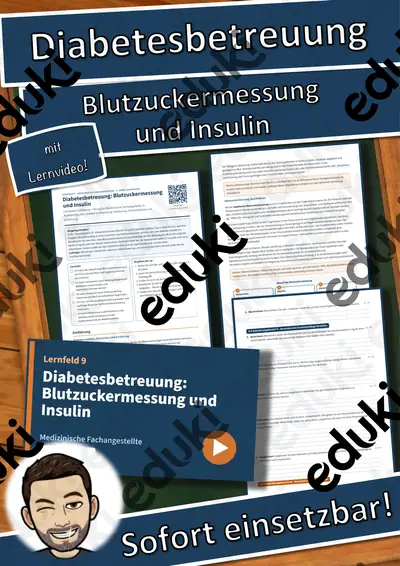
LF 9 Medizinische Fachangestellte: Diabetesbetreuung: Blutzuckermessung und Insulin – Übungen, Lösungen + Lernvideo
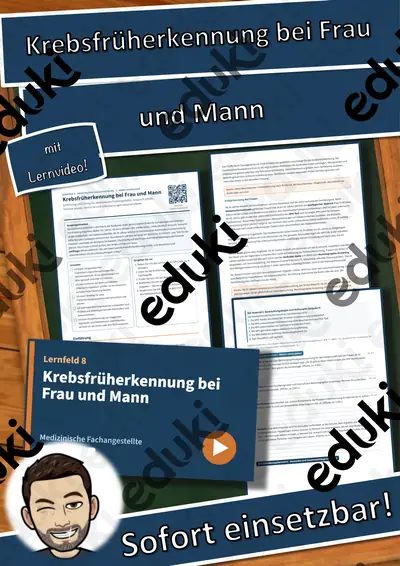
LF 8 Medizinische Fachangestellte: Krebsfrüherkennung bei Frau und Mann – Übungen, Lösungen + Lernvideo
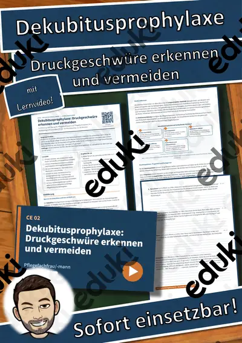
CE 02 Pflegefachfrau/-mann: Dekubitusprophylaxe: Druckgeschwüre erkennen und vermeiden – Übungen, Lösungen + Lernvideo
Keine Materialien gefunden – versuch einen anderen Suchbegriff oder Filter.